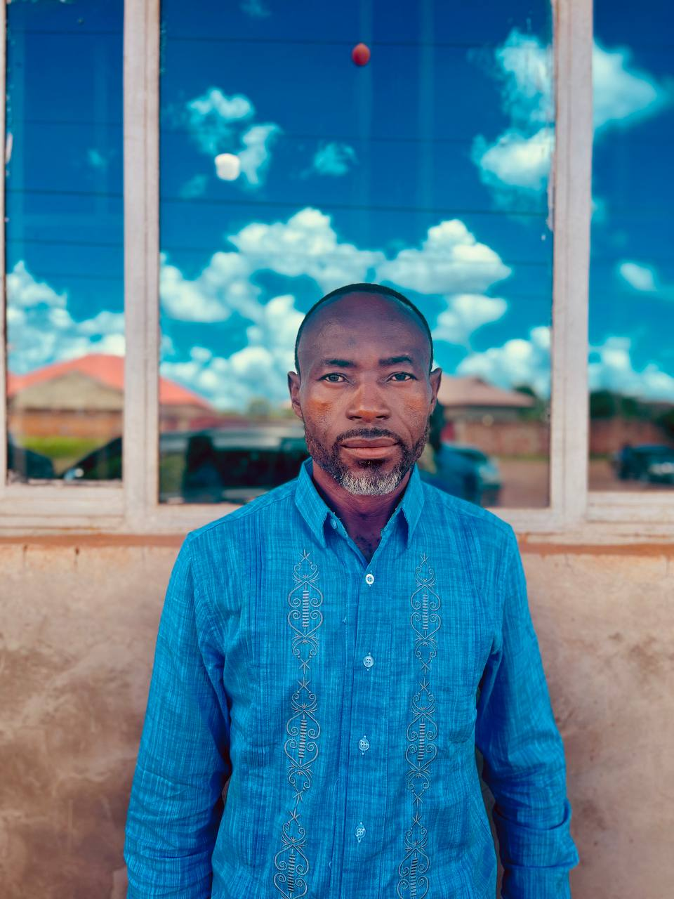
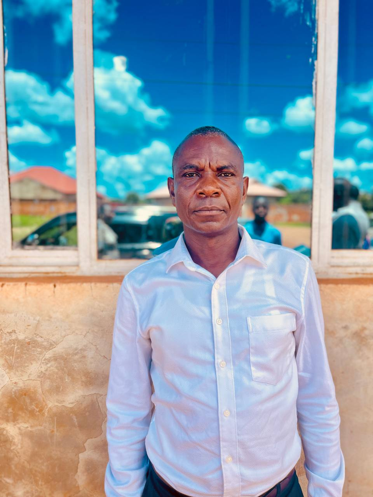
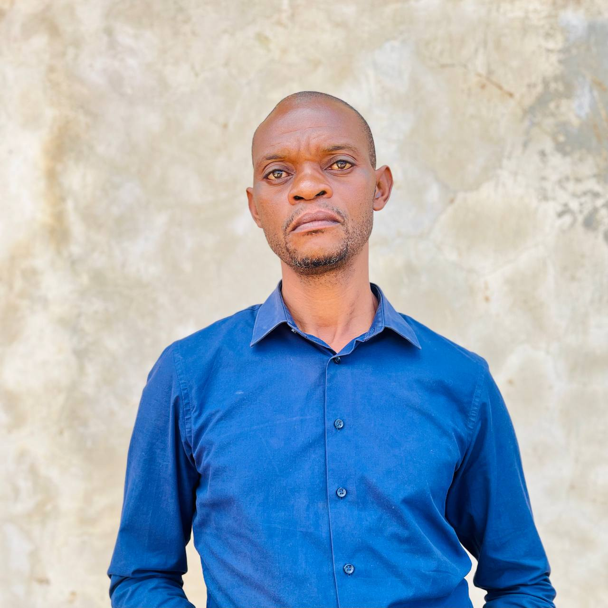

Serviteurs & conseil communautaire
le corps des serviteurs de Verts-Pâturages est un groupe dédié à l'enseignement, la prière et l'édification spirituelle qui a évolué au fil des années et a su s'étendre par la grâce de DIEU et possèdent actuellement plusieurs extension.
Corps des Serviteurs
Attributions
- Enseignement et Prédication : Partager la parole de Dieu à travers des sermons inspirants et des études bibliques.
- Conseil Spirituel : Offrir un soutien pastoral et des conseils aux membres de la communauté.
- Organisation d’Événements : Coordonner les activités de l’église, y compris les services, les retraites et les programmes communautaires.
- Soutien aux Départements : Collaborer avec les différents départements pour assurer une synergie dans les efforts de l’église.
- Formation Continue : Participer à des formations pour approfondir leurs connaissances théologiques et leurs compétences pastorales.
Activités principales
- Organiser les rencontres pour soutenir les activités spirituelles par la prière
- Travailler sous la supervision du pasteur pour harmoniser les programmes d'activités du département

COUPLE RÉVÉREND PASTEUR KADIMA EMMANUEL
Pasteur principalConduit la communauté avec sagesse et compassion. Passionné par l’enseignement, la prière, et l’édification spirituelle enracinée dans la connaissance de la parole de Jesus Christ faite chair.
Mathieu 28: 19-20

PASTEUR CHARLES KALOMBO
Pasteur Assistant Président du département d'evangelisationIL n'ya donc maintenant aucune condamnation pour ceux qui sont en Jésus Christ.
Romains 8: 1

NYANGWILA LUKUNYI GUYGUY
Diacre Administrateur Membre du departement d'evangelisationQue Dieu nous rendent prospère dans tous les domaines de notre vie!
Cantique de David. L'Eternel est mon berger: je ne manquerai de rien. 2Il me fait reposer dans de verts pâturages, Il me dirige près des eaux paisibles. 3Il restaure mon âme, Il me conduit dans les sentiers de la justice, A cause de son nom. 4Quand je marche dans la vallée de l'ombre de la mort, Je ne crains aucun mal, car tu es avec moi: Ta houlette et ton bâton me rassurent. 5Tu dresses devant moi une table, En face de mes adversaires; Tu oins d'huile ma tête, Et ma coupe déborde. 6Oui, le bonheur et la grâce m'accompagneront Tous les jours de ma vie, Et j'habiterai dans la maison de l'Eternel Jusqu'à la fin de mes jours.
Psaumes 23

LUKANDA LUTUMBA CHRISTIAN
Ancien President du departement d'intercessionChère Eglise, pour tes 10 ans d'age! Je suis tellement reconnaissant pour tout ce que vous faites pour nous. Que Dieu continue de vous bénir et vous guidez dans votre mission.
Merci pour ce que vous faites pour la vie de la communaute
"Oh! si tu déchirais les cieux, et si tu descendais, Les montagnes s'ébranleraient devant toi, 2Comme s'allume un feu de bois sec, Comme s'évapore l'eau qui bouillonne; Tes ennemis connaîtraient ton nom, Et les nations trembleraient devant toi. 3Lorsque tu fis des prodiges que nous n'attendions pas, Tu descendis, et les montagnes s'ébranlèrent devant toi. 4Jamais on n'a appris ni entendu dire, Et jamais l'oeil n'a vu qu'un autre dieu que toi Fît de telles choses pour ceux qui se confient en lui. 5Tu vas au-devant de celui qui pratique avec joie la justice, De ceux qui marchent dans tes voies et se souviennent de toi. Mais tu as été irrité, parce que nous avons péché; Et nous en souffrons longtemps jusqu'à ce que nous soyons sauvés."
Esaie 64: 1-5

OTADIMBO DAHE LUCIE
Présidente du département de l'EcodimCar Dieu a tant aimé le monde qu'il a donné son Fils unique, afin que quiconque croit en lui ne périsse point, mais qu'il ait la vie éternelle.
Jean 3:16

KALOMBO KAMBOWA STEPHANE
Ancien PRESIDENT DE CULTE & DU DEPARTEMENT DE LOUANGE ET ADORATIONQue Dieu aide l'église à ressembler à Christ!
L'Eternel marchera lui-même devant toi, il sera lui-même avec toi, il ne te délaissera point, il ne t'abandonnera point; ne crains point, et ne t'effraie point.
Deuteronome 31: 8

MISENGA KALOMBO ANNA
Présidente du departement des mamansQue ce jubilé de 10ans soit le debut d'une nouvelle saison!plus de croissance, plus d'amour fraternel, plus d'ames gagnées pour le Seigneur.
L'Eternel a fait pour nous de grandes choses; Nous sommes dans la joie.
psaumes 126: 3

MUKENDI NGOMBA PIERRE
Ancien Vise president du departement de corps de serviteursJesus Christ est la manifestation de l'amour de Dieu pour le salut de l'humanité.
Alors s'étant relevé, et ne voyant plus que la femme, Jésus lui dit: Femme, où sont ceux qui t'accusaient? Personne ne t'a-t-il condamnée? 11Elle répondit: Non, Seigneur. Et Jésus lui dit: Je ne te condamne pas non plus: va, et ne pèche plus.
Jean 8: 10-11

BILONDA KALONJI Thérèse
Présidente Département MédiasA ma bien aimee Eglise.
Merci d'etre un lieu de priere, de fortification, d'adoration, de louange, ou je peux oublier certains problèmes.
Je souhaite que tu prosperes a tous egards et que la grace et les benedictions de Dieu soient sur toi et sur tout tes membres.
"Voici je lui donnerai la guerison et la sante, je les guerirai, Et je leur ouvrirai une source abondante de paix et de fidelite."
Jeremie 33: 6
Car il ordonnera à ses anges de te garder dans tous tes chemins."
Psaumes 91:11

KABAMBA TSHABWIKA JOSEPH (Herman)
Ancien Président du corps des serviteursDieu est tellement grand et merveilleux!.
"OUI, le bonheur et la grace m'accompagneront Tous les jours de ma vie, Et je demeurerai dans la maison de l'Éternel Jusqu'a la fin de mes jours."
psaumes 23: 6
MUKADI DISELA IRENEE
AncienDieu nous invite dans son royaume, un monde de surnaturel.
Vous tous qui avez soif, venez aux eaux, Même celui qui n'a pas d'argent! Venez, achetez et mangez, Venez, achetez du vin et du lait, sans argent, sans rien payer! 2Pourquoi pesez-vous de l'argent pour ce qui ne nourrit pas? Pourquoi travaillez-vous pour ce qui ne rassasie pas? Ecoutez-moi donc, et vous mangerez ce qui est bon, Et votre âme se délectera de mets succulents. 3Prêtez l'oreille, et venez à moi, Ecoutez, et votre âme vivra: Je traiterai avec vous une alliance éternelle, Pour rendre durables mes faveurs envers David.
Esaie 55: 1-3

KABEYA KABEMBA PATRICK
Diacre president de departement fiancailles et mariagesNous vivons dans la grâce mais le péché reste péché, apprenons à faire du bien aux autres.
Tout est permis, mais tout n'est pas utile; tout est permis, mais tout n'édifie pas. 24 Que personne ne cherche son propre intérêt, mais que chacun cherche celui d'autrui.…
1 corinthiens 10: 23-24

KASINDI RISASI AUGUSTIN
Diacre President du departement technique et sonorisation(Ruth 1 : 16)Ruth repondit: ne me presse pas de te laisser, de retouner loin de toi! ou tu iras j'irais, ou tu demereras je demeurerai; ton peuple sera mon peuple, et ton Dieu sera mon Dieu.
C'est pourqoi je vous le dis : tout ce que vous demanderez en prierant, croyez que vous l'avez recu, et vous le verrez s'accomplir.
Marc 11: 24

KADANG KAKUT Christine
Membre du département de vie communautaireAyons pour coutume d'aimer, d'esperer et de prier car Dieu n'oublie jamais in coeur fidele.
Allez, faites de toutes les nations des disciples, les baptisant au nom du Père, du Fils et du Saint-Esprit, 20et enseignez-leur à observer tout ce que je vous ai prescrit. Et voici, je suis avec vous tous les jours, jusqu'à la fin du monde.
Matthieu 28: 19-20

KABENJI MUNANGA EMMANUEL
Diacre chargé de baptèmeVraiment Dieu est fidèle!
Celui qui demeure sous l'abri du Très-Haut Repose à l'ombre du Tout Puissant. Je dis à l'Eternel: Mon refuge et ma forteresse, Mon Dieu en qui je me confie! Car c'est lui qui te délivre du filet de l'oiseleur, De la peste et de ses ravages. Il te couvrira de ses plumes, Et tu trouveras un refuge sous ses ailes; Sa fidélité est un bouclier et une cuirasse. Tu ne craindras ni les terreurs de la nuit, Ni la flèche qui vole de jour, Ni la peste qui marche dans les ténèbres, Ni la contagion qui frappe en plein midi. Que mille tombent à ton côté, Et dix mille à ta droite, Tu ne seras pas atteint; De tes yeux seulement tu regarderas, Et tu verras la rétribution des méchants. Car tu es mon refuge, ô Eternel! Tu fais du Très-Haut ta retraite. Aucun malheur ne t'arrivera, Aucun fléau n'approchera de ta tente. Car il ordonnera à ses anges De te garder dans toutes tes voies; Ils te porteront sur les mains, De peur que ton pied ne heurte contre une pierre. Tu marcheras sur le lion et sur l'aspic, Tu fouleras le lionceau et le dragon. Puisqu'il m'aime, je le délivrerai; Je le protégerai, puisqu'il connaît mon nom. Il m'invoquera, et je lui répondrai; Je serai avec lui dans la détresse, Je le délivrerai et je le glorifierai. Je le rassasierai de longs jours, Et je lui ferai voir mon salut.
psaumes 91

KUZUNGULU TWITE YANN
Diacre President du departement de la jeunesseVeillons les uns sur les autres pour nous inciter à l'amour et à des bonnes œuvres. N'abandonnons pas notre assemblée comme certains ont l'habitude, mais encourageons-nous mutuellement.
Veillons les uns sur les autres, pour nous exciter à la charité et aux bonnes oeuvres. 25N'abandonnons pas notre assemblée, comme c'est la coutume de quelques-uns; mais exhortons-nous réciproquement, et cela d'autant plus que vous voyez s'approcher le jour.
Heubreux 10: 24-25

Didier BANZA
AncienQue Dieu soit toujours notre Guide.
Quand l'Eternel approuve les voies d'un homme, Il dispose favorablement à son égard même ses ennemis.
proverbe 16: 7

TSHIMBALANGA MUTOMBO Coeurfils
President du departement de protocoleQue Dieu soit toujours notre Guide.
Quand l'Eternel approuve les voies d'un homme, Il dispose favorablement à son égard même ses ennemis.
proverbe 16: 7

KABEYA NTAMBWE TRESOR
Diacre Vice president de la presseSi Dieu est pour nous qui sera contre nous. Nous devons faire tout pour garder la présence de Dieu dans notre Eglise.
Ne vous inquiétez de rien; mais en toute chose faites connaître vos besoins à Dieu par des prières et des supplications, avec des actions de grâces. 7Et la paix de Dieu, qui surpasse toute intelligence, gardera vos coeurs et vos pensées en Jésus-Christ..
philippiens 4: 6-7

MUKENGESHAY BADIBANGA TRESOR
AncienSi tu es fidèle a Dieu :
- tu seras béni
- tu seras protégé
- tu seras fortifié
- il t'honorera
- Sa generosité durera a toujours dans ta vie
Il en est ainsi de la foi: si elle n'a pas les oeuvres, elle est morte en elle-même. 18Mais quelqu'un dira: Toi, tu as la foi; et moi, j'ai les oeuvres. Montre-moi ta foi sans les oeuvres, et moi, je te montrerai la foi par mes oeuvres.
Jacques 2: 17-18

MUKENGE JOSUE
AncienCar Dieu a tant aimé le monde qu'il a donné son Fils unique, afin que quiconque croit en lui ne périsse point, mais qu'il ait la vie éternelle.
Jean 3:16